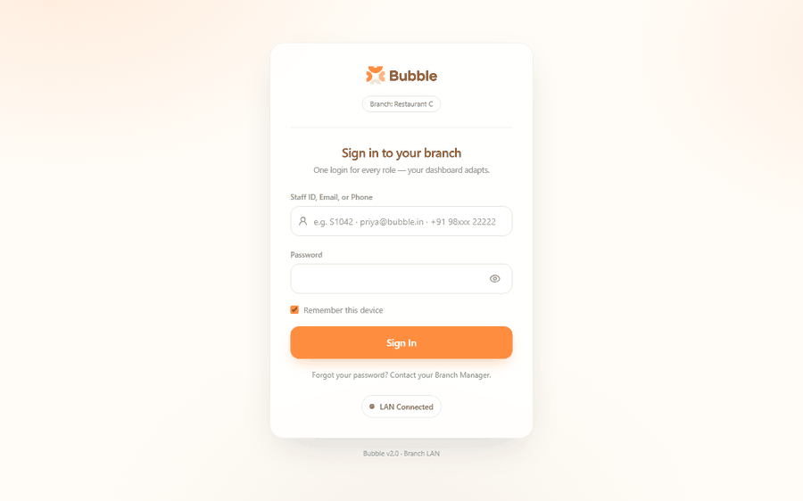
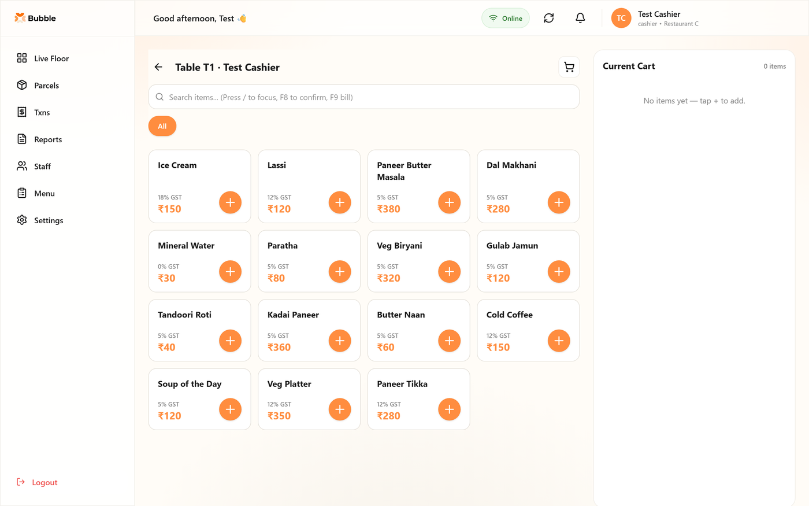
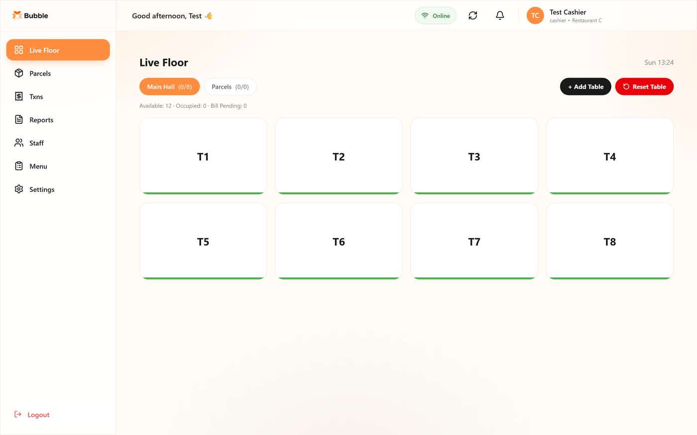
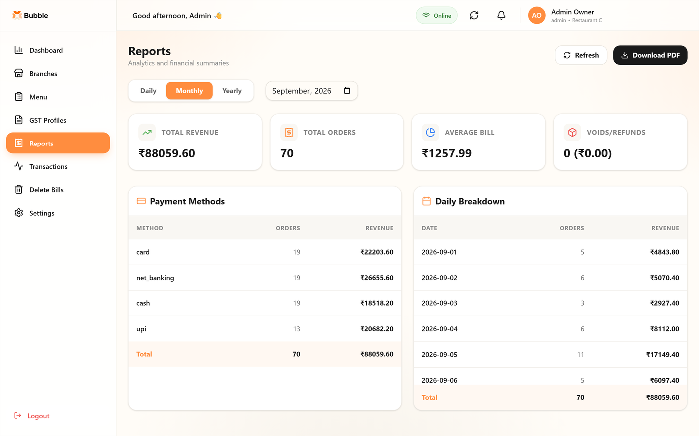
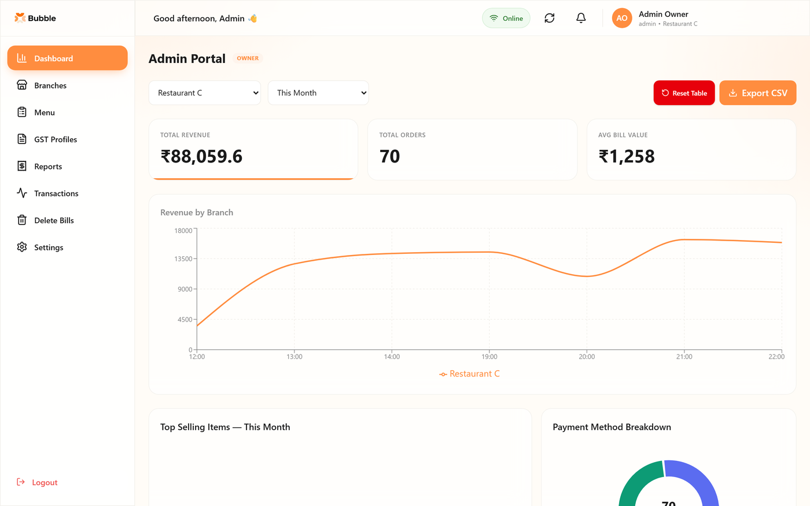
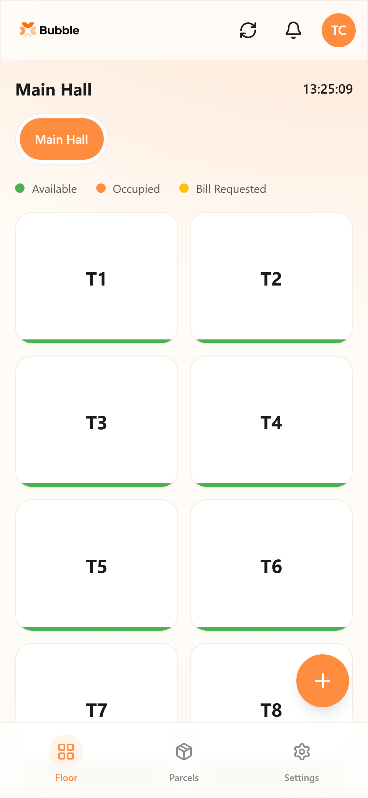

Order capture, live floor state and GST billing across three restaurant outlets.
Three restaurants under one owner, each taking orders on paper and reconciling revenue by hand at close. GST filing meant re-keying a month of handwritten bills, and the owner could not compare outlets without physically visiting each one. The hard constraint was connectivity: these are restaurants in a tourist town, and a POS that stops taking orders when the line drops is worse than paper.
A platform handling order capture, live floor state, billing and statutory reporting across all three outlets, with per-outlet isolation and a consolidated owner view. Sole engineer — requirements with a non-technical owner, data modelling, build, on-site deployment and ongoing support.
And why the alternative was worse.
Each outlet runs its own PocketBase process with its own SQLite file on its own on-prem PC. One cloud database with an outlet_id column would have made the owner’s consolidated view a single query instead of three. I took the harder reporting path to buy operational independence: a restaurant whose internet drops keeps taking orders, printing tickets and closing bills locally, and only the cross-outlet view degrades. The cost is real — the owner view authenticates to three instances and merges client-side.
Two captains claiming the same table at the same moment is not solvable in React. A version check runs inside PocketBase on every status transition, narrow by design — it only fires on the available-to-occupied move, the one instant a collision can happen. The loser gets a typed error the UI can act on, instead of two captains silently building orders on one table.
A bill is computed from the price and slab captured when the item was ordered, never from the live menu. Menu prices change; a bill reprinted in October must reproduce exactly what was issued in April, and GST filings are audited against the figures as issued.
Two lines of ₹33.333 round to ₹66.67 at the end but ₹66.66 per line. The receipt shows per-line amounts, so the totals must equal the sum of the numbers the customer can actually see.
Thermal printers speak ESC/POS over USB or raw TCP, neither reachable from a web runtime. A small Node worker on the restaurant LAN turns print-job rows into paper. Making printing a queue rather than a synchronous call also means a jammed printer never blocks a cashier from closing a bill.
Captured against a locally seeded demo database. Every name, figure and identifier shown is invented.






Dine-in attaches to a table; parcel skips the floor entirely.
Two devices ordering at once cannot duplicate or skip a kitchen ticket number.
Colour-coded by state, updating across devices without a refresh.
CGST/SGST split per line from the slab captured at order time, printed with the outlet’s registered GSTIN.
Payment method locked after finalisation; no items can be added to the order behind it.
Daily, monthly and yearly views with payment-method breakdown, top items, and PDF/CSV/Excel export.
What I would fix next, stated plainly.